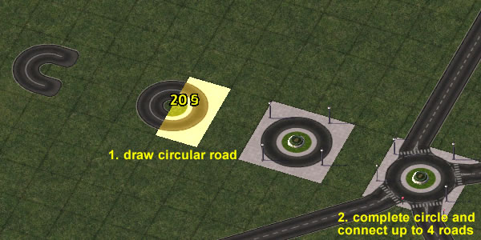
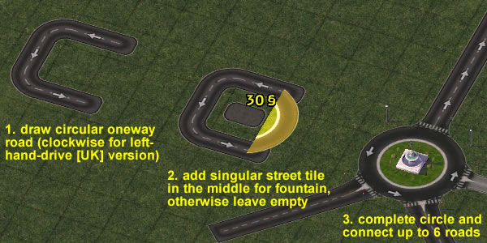

Within the NAM, there are several different options for creating roundabouts. This feature guide will cover all the possibilities currently available in the mod.
- Road and Street Roundabouts (2x2) [Drag Pattern Basis]
- One-Way Road Roundabouts (3x3) [Drag Pattern Basis]
- Avenue Roundabouts (4x4) [FLEX Piece Basis]
- Advanced/Turbo Roundabouts [Puzzle Piece Basis]
- Contents of Avenue Roundabouts and Interchanges Button
To trigger the initial Road roundabout, you must draw a Road circle in a 2x2 tile area using the Road network tool. There currently exist many variations with one, two, three or four orthogonal or diagonal Roads stemming from this initial 2x2 tile area.
The Street-based version is constructed identically, by drawing a Street circle in a 2x2 area using the Street network tool.
To trigger the initial One-Way Road roundabout, you must draw a One-Way Road circle in a 3x3 tile area. The One-Way Road Roundabouts are the most full-featured of all the types, capable of accepting six (6) different approaches, and can even accept the RHW-2 and MIS Ramp networks from the RealHighway plugin.
Note that the circle must be drawn counter-clockwise if one's game has traffic driving on the right (RHD), and clockwise if one's game has traffic driving on the left (LHD).
Avenue roundabouts are 4x4 FLEX pieces, which can be found under the Avenue Roundabouts and Interchanges button. After placing down one of these FLEX pieces, you can drag orthogonal and diagonal Avenues into the roundabout in order to connect it with the rest of your network. By default, the Avenue roundabout comes with FLUP support--the FLUPs portal aligns parallel to the fountain prop at the center of the roundabout. If this functionality is not required, you can bulldoze the inner 2x2 tile fountain prop after building the roundabout and replace it by any other items. There are also a few Avenue roundabout variations including crossings with Elevated Highway and GLR.
The Avenue roundabouts can accept up to eight (8) Avenue approaches.
Note that the same button also contains the Avenue Y-Stack interchange and turbo roundabouts.
Turbo roundabouts are static puzzle pieces that can be found under the Avenue Roundabouts and Interchanges button and serve as circular intersections between a double-tile and a single-tile network, such as Avenue/RD-4/RD-6 and ARD-3/TuLEPs/FTLs. In order to make sure they can be properly connected to your network, it is advisable to bulldoze a 2x1 tile intersection between two suitable networks and plop the turbo roundabout onto the resulting gap.
The following items are located under the Avenue Roundabouts and Interchanges Button, found under the Roads menu:
- Avenue Roundabout (with FLUPs portal) [FLEX Piece]
- Avenue Roundabout with Diagonal Connection (with FLUPs portal) [FLEX Piece]
- Avenue Roundabout under Maxis Highway
- Avenue Roundabout with Tram-Thru
- Avenue Roundabout with Tram-Bend
- Avenue Roundabout with Tram-3-way Intersection
- Avenue Roundabout with Tram-4-way Intersection
- Avenue Roundabout under Maxis Highway with Tram-Thru
- Avenue Y-Stack
- Avenue Diamond Interchange
- Avenue x ARD-3 Turbo Roundabout (a) 4-way (b) 3-way
- RD-4 x ARD-3 Turbo Roundabout (a) 4-way (b) 3-way
- RD-6 x ARD-3 Turbo Roundabout (a) 4-way (b) 3-way
- Avenue x ARD-3 Standard Roundabout (a) 4-way (b) 3-way
- RD-4 x ARD-3 Standard Roundabout (a) 4-way (b) 3-way
- RD-6 x ARD-3 Standard Roundabout (a) 4-way (b) 3-way